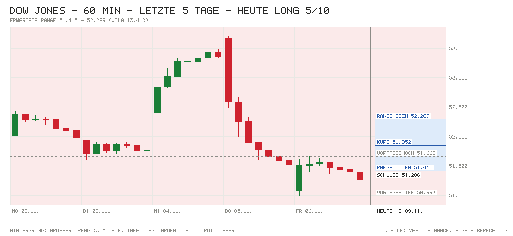

Tagesentscheidung ab 15:32 bis 22:00 Uhr
Nach dem Ausverkauf der Vorwoche ist die Erholung breit: Der Dow eröffnete 0,7 % höher und legte in den ersten Minuten weitere 0,4 % zu. Die 30 Werte bringen zusammen +534 Punkte, angeführt von Goldman Sachs, Caterpillar, Microsoft und Amazon. Dazu kommen ein Ölpreis-Rückgang um 5 %, leicht fallende Renditen und ein starkes Europa. Gegenargumente: Der große Trend steht auf Bear, der Dow liegt noch unter dem 21- und 50-Tage-Schnitt, und für Dezember ist eine Fed-Erhöhung zu 79 % eingepreist.
- Kurs um 15:32
- 51.852
- Erwartete Range
- 51.415 – 52.289
- Eingepreist (Tagesoption)
- ±0,85 %
Einschätzung vom Kurs um 15:32 bis zum US-Schluss. Range = ±1 σ für die restliche Handelszeit aus der S&P-500-Tagesoption, auf den Dow umgerechnet (ca. 68 %). Keine Anlageberatung.
Chart

Signale
| Signal | Wirkung | Stand und Einordnung |
|---|---|---|
| Eröffnung & erste Minuten | Rückenwind | Eröffnung 51.643 (Lücke +0,70 %), jetzt 51.852 (+0,41 % seit Eröffnung), Hoch bisher 51.952. Die Lücke wird gekauft, nicht verkauft. |
| Schwergewichte heute | Rückenwind | Alle 30 Werte zusammen +534 Pkt. Vorn Goldman Sachs (+118), Caterpillar (+103), Microsoft (+88), Amazon (+86). Bremser Nvidia (−76) und Chevron (−17). |
| US-Daten heute | Neutral | Keine Daten um 14:30 Uhr. Um 16:00 Uhr nur Lagerbestände im Großhandel (Prognose +0,6 %). |
| Europa & Asien | Rückenwind | DAX +1,37 %, Euro Stoxx 50 +1,60 %. Über Nacht Nikkei +2,33 %, Shanghai +0,32 %, Hang Seng −0,13 %. |
| Zinserwartung | Gegenwind | Fed am 9.12.: 79 % für eine Erhöhung um 25 Bp. (impl. 4,08 %). Nach 165.000 neuen Stellen (Prognose 65.000) ist die Erhöhung fast eingepreist. |
| Renditen | Rückenwind | US 2J 4,52 % (+1 Bp. vs. offiziell 4,51 %), 10J 4,84 % (−2 Bp.). Leichte Entlastung am langen Ende. |
| Kreditstress | Rückenwind | FRED n/v. Ersatz: HYG +0,24 %, LQD +0,26 %. Kein Stress, Anleihen fester. |
| Öl & Dollar | Rückenwind | WTI 86,58 USD (−4,68 %), Brent 93,17 USD (−5,24 %) nach Berichten über Zugeständnisse Irans und Gespräche über ein Kriegsende. EUR/USD 1,1197 (−0,28 %). |
| Trend | Gegenwind | 51.852 unter dem 21-Tage-Schnitt (52.126) und dem 50-Tage-Schnitt (52.064), über dem 200-Tage-Schnitt (50.676). Großer Trend: Bear seit 28.10. |
| Positionierung | Neutral | COT 3.11.: Hedgefonds im S&P-Future netto −372.318 (+28.286), sie bauen Shorts ab. Keine Extremlage. |
| Unternehmensnachrichten | Gegenwind | Nvidia −6,6 % nach einer internen Untersuchung, ob CEO Jensen Huang Ziel ausländischer Geheimdienste war. Das belastet Technologiewerte, im Dow aber nur −76 Pkt. |
| Profi-Sicht | Neutral | ING: Die Dollar-Rally ist überdehnt und braucht mehr Risikoscheu. Eine Fed-Erhöhung im Dezember bleibt wahrscheinlich. |
| Termine im Fenster | Neutral | Fed-Reden von Bowman (14:40 und 18:15), Goolsbee (16:00) und Barkin (18:15). Kein Fed-Entscheid, keine Quartalszahlen von Dow-Werten. |
Dow-Werte heute
| Aktie | Heute | Beitrag |
|---|---|---|
| Goldman Sachs | +2,23 % | +118 Pkt. |
| Caterpillar | +3,03 % | +103 Pkt. |
| Microsoft | +2,71 % | +88 Pkt. |
| Amazon | +5,40 % | +86 Pkt. |
| Nvidia | −6,64 % | −76 Pkt. |
| Home Depot | +2,01 % | +42 Pkt. |
| Sherwin-Williams | +1,90 % | +40 Pkt. |
| Apple | +1,70 % | +35 Pkt. |
| Summe aller 30 Werte | +534 Pkt. |
Beitrag = Kursänderung seit gestern ÷ Dow-Divisor (aus den Kursen berechnet, 0,16358). Laufende Kurse von Yahoo, bis zu 15 Minuten verzögert. Die Dow-Liste im Skript hat den Stand Nov. 2024.
Großer Trend (3-Monats-Momentum)
- Stand
- Bear
- Seit
- 28.10. (5 Wechsel in 3 Monaten)
- Schluss 06.11.
- −4,98 % vs. Zins +0,98 %
- Heute dreht es bei Schluss über
- 54.320 (jetzt −4,53 %)
Auch mit dem Kurs von jetzt bliebe das Signal Bear; die heutige Erholung ist ein Gegenzug im Abwärtstrend. Bull = Rendite der letzten 3 Monate über dem Geldmarktzins, Bear = darunter. Regel: Rendite der letzten 63 Handelstage (≈ 3 Monate) gegen die 13-Wochen-T-Bill (^IRX), jeden Tag zum Schluss neu entschieden, Zeitrahmen Tageskerzen (nach Antonacci 2014, dort monatlich über 12 Monate; täglich entschieden dreht es öfter falsch). Keine Anlageberatung.
Bilanz der letzten Entscheidung
5.11.: Long mit 4/10 ab 53.607. Die Richtung war falsch: Schluss 51.523, −2.084 Punkte (Tief 51.487). Die Range von ±357 wurde verfehlt. Gesamt seit Start: 2 Einschätzungen, Richtung 50 % richtig, Summe −1.567 Punkte. Für den 6.11. gab es keine Notiz.
Marktlage
| Markt | Stand | Veränderung |
|---|---|---|
| Dow Jones (Schluss 6.11.) | 51.285,73 | −0,46 % |
| Dow (Eröffnung heute) | 51.643,01 | +0,70 % |
| Dow (jetzt, Kurs zur Notiz 15:32) | 51.852 | +1,10 % |
| S&P 500 | 7.443,81 | +0,91 % |
| Nasdaq 100 | 27.289,39 | +1,11 % |
| US-Futures (S&P / Nasdaq) | 7.462,25 / 27.315,00 | +0,81 % / +0,85 % |
| DAX (aktuell) | 26.175,15 | +1,37 % |
| Euro Stoxx 50 (aktuell) | 6.269,25 | +1,60 % |
| EUR/USD | 1,1197 | −0,28 % |
| WTI (USD/Barrel) | 86,58 | −4,68 % |
| Brent (USD/Barrel) | 93,17 | −5,24 % |
| Gold (USD/Unze) | 4.136,80 | +1,52 % |
| VIX | 23,20 | −9,52 % |
| VXD (Schluss 6.11.) | 21,55 | −8,06 % |
Stände von 15:32 Uhr (Yahoo, bis 15 Min. verzögert). Fallendes Öl und ein fallender VIX sind grün markiert, weil sie Aktien entlasten. Die Dow-Veränderung am 6.11. ist aus den Schlusskursen 6.11. und 5.11. (51.523) berechnet.
Anleihen & Zinsen
| Kennzahl | Stand | Veränderung |
|---|---|---|
| US-Treasury 2J (live) | 4,52 % | +1 Bp. (vs. offiziell 4,51 % am 6.11.) |
| US-Treasury 10J (live) | 4,84 % | −2 Bp. |
| Fed nächste Sitzung (9.12.) | 79 % für +25 Bp. (impl. 4,08 %) | Erhöhung erwartet |
| Fed-Zielband | 3,75–4,00 % (EFFR 3,88 %) | zuletzt +25 Bp. am 17.9. |
| US-Hochzins (HYG, Ersatz) | 77,42 USD | +0,24 % heute |
| Investment Grade (LQD, Ersatz) | 104,80 USD | +0,26 % heute |
Die Risikoaufschläge von FRED lagen nicht vor, daher die Anleihe-ETFs HYG und LQD als Ersatz (nur Tagesveränderung, Wochenwert n/v). US-Kurve live von CNBC. Offizielle 10J vor einer Woche: 4,94 %.
Termine heute (deutsche Zeit)
- 14:30 Keine US-Konjunkturdaten
- 14:40 Fed: Rede Michelle Bowman
- 15:30 Eröffnung der Wall Street
- 16:00 Fed: Rede Austan Goolsbee (Chicago)
- 16:00 USA: Lagerbestände Großhandel – Prognose +0,6 % · zuvor +0,6 %
- 16:30 Atlanta Fed GDPNow – zuletzt 3,4 %
- 18:15 Fed: Reden Thomas Barkin (Richmond) und Michelle Bowman
- 18:25 Bank of England: Rede Andrew Bailey
- 22:00 US-Börsenschluss. Keine Quartalszahlen von Dow-Werten in den Daten.
Nachrichten zu Dow-Werten
- Nvidia: −6,6 % (−76 Pkt.). Eine interne Untersuchung prüft, ob CEO Jensen Huang Ziel einer ausländischen Geheimdienstoperation war. Damit steht seine Zukunft an der Spitze im Raum. Einschätzung: negativ für Technologiewerte, für den preisgewichteten Dow aber verkraftbar.
- Markt / Öl: Brent und WTI fallen um rund 5 % nach Berichten über Zugeständnisse Irans und Gespräche über ein Ende des Konflikts. Weltweit erholen sich Aktien von Sechsmonatstiefs. Einschätzung: positiv für Konsum- und Industriewerte; Chevron (−1,3 %) bremst leicht.
- Goldman Sachs, Caterpillar, Microsoft, Amazon: zusammen +395 Pkt. Für heute fand sich keine eigene Meldung. Einschätzung (ohne Quelle): Gegenbewegung nach dem Ausverkauf der Vorwoche, als Caterpillar als KI-Zulieferer rund 6 % verlor.
Profi-Sicht & Positionierung
- ING THINK: Laut „FX Daily: Dollar rally needs more risk-off fuel“ ist die Dollar-Rally nach dem Tech-Ausverkauf überdehnt. Starke Arbeitsmarktdaten und erwartete US-Inflation von 0,3 % stützen die Wette auf eine Fed-Erhöhung im Dezember. Brent pendelte vor dem heutigen Rückgang knapp unter 100 USD, die Golf-Gespräche kommen langsam voran (siehe auch: Robust US jobs market boosts December rate hike chances).
- Positionierung (COT, Stand 3.11.): Hedgefonds im S&P-Future netto −372.318 Kontrakte (+28.286), Vermögensverwalter netto +928.584. Im Nasdaq-Future Hedgefonds leicht long (+10.073). In der 10-jährigen Treasury Hedgefonds netto −2,26 Mio. Kontrakte.
Quellen
- Marktdaten (Skript
marktdaten.mjs): Yahoo Finance (Kurse, Dow-Werte, VXD, ^IRX), Nasdaq (Kalender, Optionskette SPY), CNBC (US-Kurve), Bundesbank, U.S. Treasury, Fed-Pfad über Amber Terminal, CFTC (COT), ING THINK - Benzinga: Dow, S&P 500 Futures Rise Despite Nvidia Sell-Off Over Jensen Huang Controversy
- Reuters/MarketScreener: Stocks find firmer ground but Nvidia woes pose fresh test, oil falls
- NBC News: Stocks plunge as election outcome and AI worries crush tech shares
- ING THINK: FX Daily
- ING THINK: Robust US jobs market boosts December rate hike chances